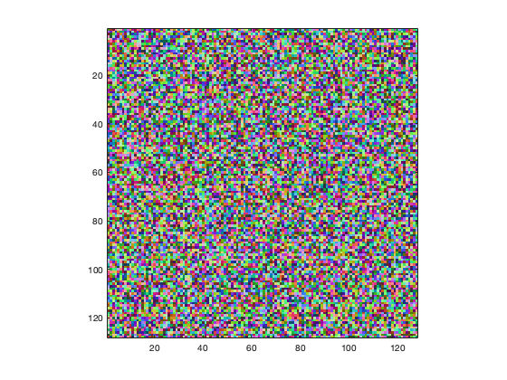

Display a pure quaternion array as an image.
(Quaternion overloading of standard MATLAB® function)
h = image(A)
image displays a quaternion array as an image. Unlike the overloaded MATLAB® function, it supports only one parameter which must be a pure quaternion array with elements of type uint8, uint16, or double.
The output parameter is optional, with the same functionality as the corresponding MATLAB® function (a graphics handle).
>> image(randv(128)./2 + quaternion(1,1,1)./2), axis image
Creates a random pure quaternion array with component values in the range [0,1] and displays this array as an image.
